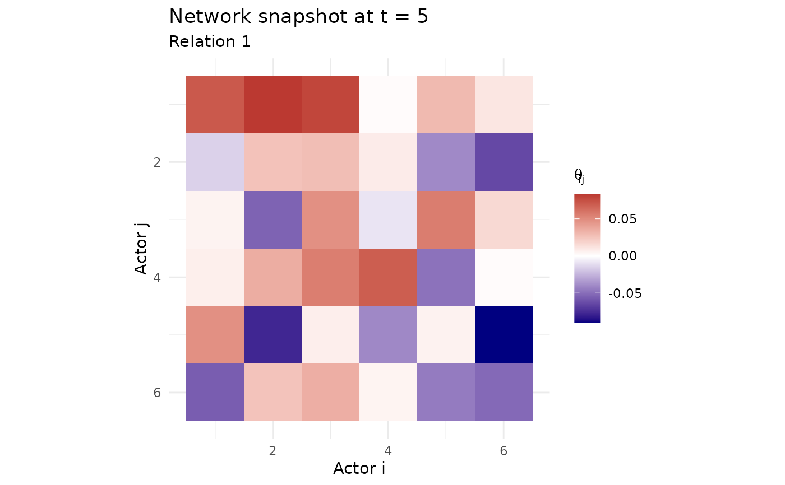

Heat map of Theta at given time (posterior mean)
Usage
net_snapshot(
fit,
t,
rel = 1,
sparse = NULL,
eps = 1e-04,
show_significant = FALSE,
cred_level = 0.025
)Arguments
- fit
Dynamic dbn object
- t
Time point
- rel
Relation index (default: 1)
- sparse
Auto-switch to sparse visualization for large networks
- eps
Threshold for sparse plotting
- show_significant
Logical, whether to show only significant effects (default: FALSE)
- cred_level
Credible level for significance (default corresponds to 95% CI)
Examples
# \donttest{
sim <- simulate_dynamic_dbn(n = 6, time = 10, seed = 1)
fit <- dbn(sim$Y, model = "dynamic", nscan = 200, burn = 100, verbose = FALSE)
net_snapshot(fit, t = 5)

# }